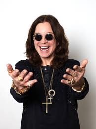

"Acho que estou ficando louco, mais enquanto eu estiver aproveitando, tudo bem."
- Ozzy Osbourne.
E com essa fala, confirmamos que ele ainda esta aproveitando bem.
Um pequeno tributo à Ozzy Osbourne.
Ozzy Osbourne é uma das maiores personalidades do mundo da musica, acumulando diversas musicas, feitos e polemicas em sua carreira que até hoje
( seus 75 anos) ainda sim segue criando e servindo de inspiração para diversas pessoas.
>

Inicio de carreira de Ozzy Osbourne.
Ozzy formou sua primeira banda, com nome de "The Polka Tulk Blues Band, com vinte anos de idade. A mesma veio a mudar o nome para "Polka Tulk" e, mais tarde veio a se chamar "Earth".
E em 1969, nasceu sua banda de MAIOR sucesso, a "Black Sabbath".
Carreira solo de Ozzy.
Após o grande sucesso da banda Black Sabbath, com o album “Never Say Die!”, veio para marcar a saida de Ozzy da banda e seguir carreira solo, onde teve de estreia seu album
"Blizzard of Ozz" , lançado a 20 de Setembro de 1980, com seu maior sucesso: "Crazy Train".
A seguir, tendo listado todos seus albuns solos:
Blizzard of Ozz (1980)
Diary of a Madman (1981)
Bark at The Moon (1983)
The Ultimate Sin (1986)
No Rest for the Wicked (1988)
No More tears (1991)
Ozzmosis (1995)
Down to Earth (2001)
Under Cover (2005)
Black Rain (2007)
Scream (2010)
Ordinary Man (2020)
Patient Number 9 (2022)
Em 2013, Ozzy se reuniu novamente a banda Black Sabbath, com o album "13", e com o album "The End" em 2016, sendo o ultimo album da banda.
Maiores sucessos!
Como citado anteriormente, um dos maiores sucessos de Ozzy, foi logo seu album de estreia solo: "Blizzard of Ozz", que fez muito sucesso com as musicas "Crazy Train" e "Mr.Crowley".
Sendo um sucesso total, em seguida temos o album "No more tears", com as musicas "Mama im coming home" e a musica que leva o nome do album, "No more tears". Em sua biblioteca de musicas, temos diversos sucessos que serão listados abaixo:
Crazy Train (Blizzard Of Ozz, 1980)
Mr. Crowley (Blizzard Of Ozz, 1980)
Diary Of A Madman (Diary Of A Madman, 1981)
No More Tears (No More Tears, 1991)
Bark At The Moon (Bark At The Moon, 1983)
Mama, I’m Coming Home (No More Tears, 1991)
Shot In The Dark (The Ultimate Sin, 1986)/li>
Over The Mountain (Diary Of A Madman, 1981)
Flying High Again (Diary Of A Madman, 1981)
Hellraiser (No More Tears, 1991)
Dentre outros sucessos...
Curiosidades!
Uma das grandes Curiosidades que temos sobre o Ozzy é que, em uma turnê, um fã atirou ao placo um morcego (real) e, Ozzy, achando que o animal era de brinquedo, mordeu a cabeça do animal, levando o publico a loucura, porem ocasionando o mesmo a tomar diversas ingeções contra doenças que poderiam ser providas desse fato.
Ozzy possui no total, 6 filhos, sendo 3 deles com duas mulheres diferentes!
No dia 19 de março de 1982, um avião se chocou contra o onibus que levava Ozzy para um show, ocasionando na explosão do avião e na morte do melhor amigo de Ozzy, deixando o mesmo em uma depressão profunda por certo tempo